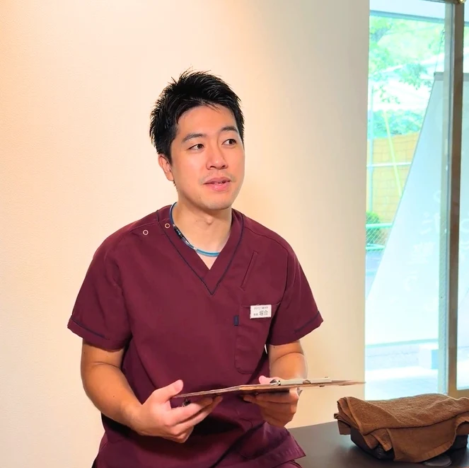
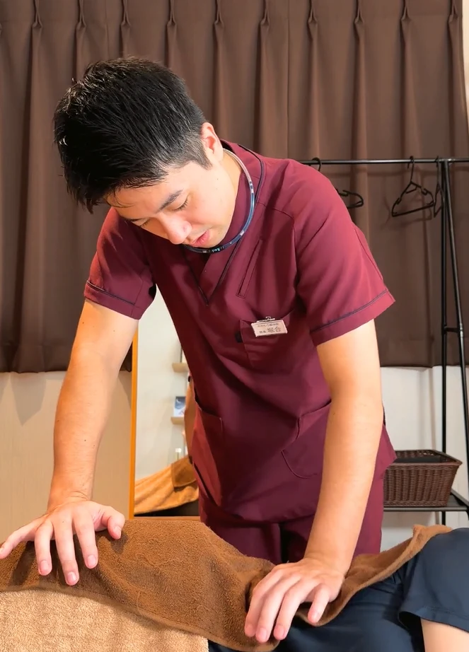
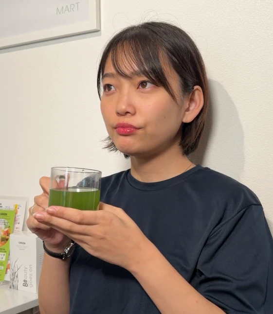
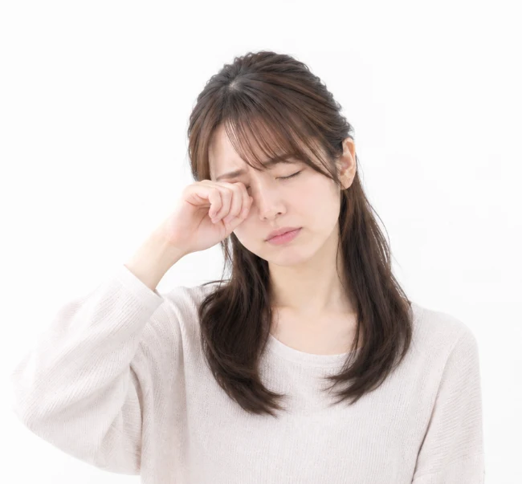
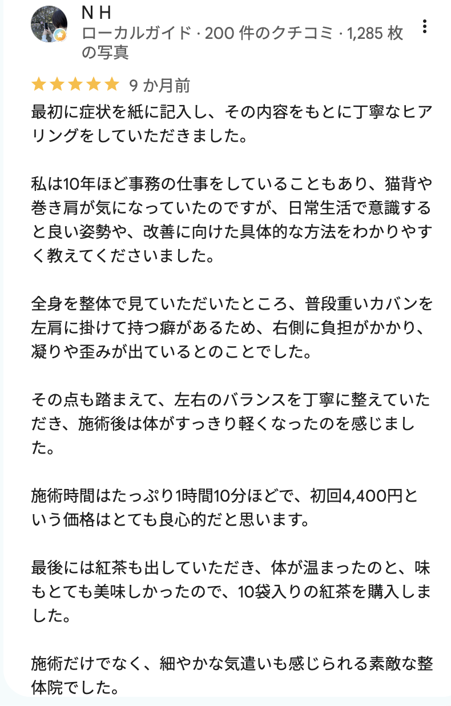
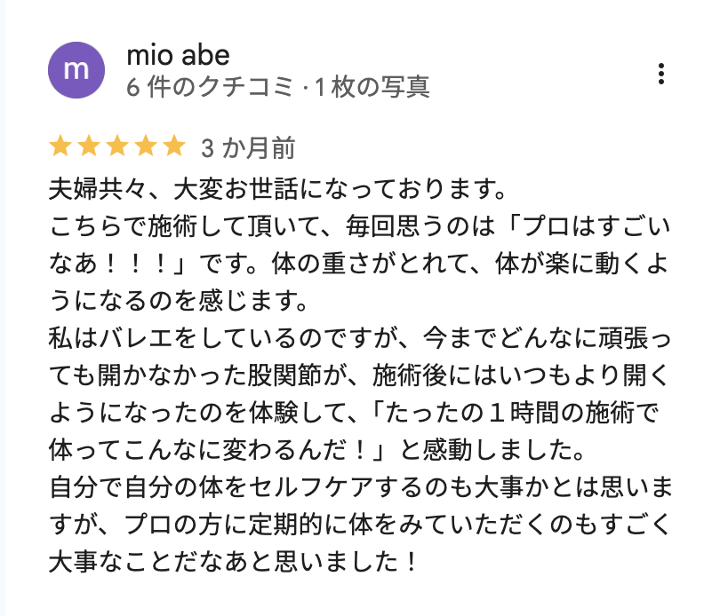
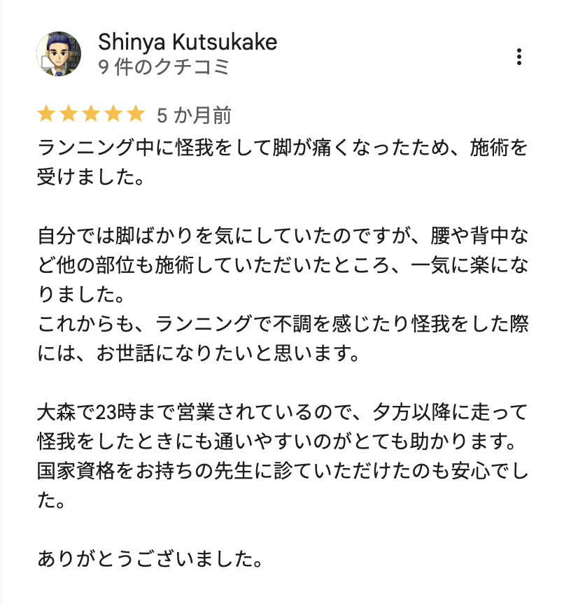
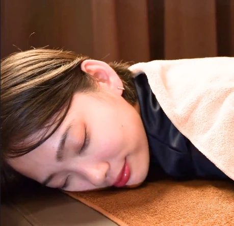

初回限定キャンペーン
初回限定コース
通常8,800円 50%OFF
初回限定4,400円（税込）
施術内容
施術時間60分
＼ スマホで1分で予約完了 ／
今すぐ予約する初回限定キャンペーン開催中
気軽に整体をはじめられる
初回限定の特別価格
通常価格 8,800円
4,400円（税込）
施術内容

丁寧な
カウンセリング

あなたにあった
オーダーメイド整体

施術後の
インナーケア
＼ スマホで1分で予約完了 ／
いますぐ予約する大森駅徒歩8分｜平日23時まで営業
ストレッチしても骨盤の歪みが戻る
グッズを使っても骨盤まわりが張る

サプリや青汁でも姿勢のくずれが続く
早寝を心がけても朝から骨盤の歪みが気になる
おおもり整体院にご来院された方の
ストレッチ・マッサージグッズ・サプリ…
毎日のストレッチや、マッサージグッズ、サプリや青汁、腸活。自宅ケアを続けていること自体は、とても大切な習慣です。 それでも「なかなか変わらない」「すぐ元に戻る」と感じるのは、自宅ケアだけでは手が届きにくいところがあるからです。
① 自分の骨盤の歪みは、自分では見えにくい
姿勢のクセや骨盤まわりの歪みは、鏡を見てもなかなか分かりません。原因が分からないまま、つらい場所だけをほぐし続けてしまいがちです。
② 背中や身体の奥は、セルフケアが届きにくい
骨盤のまわりや背中、腰の深いところは、ストレッチやグッズでは狙ってケアしにくい部分です。
③ 「内側だけ」「外側だけ」のケアになりやすい
骨盤の歪みが残ったままだと、サプリや食事など内側のケアだけ、ストレッチなど外側のケアだけでは、どちらかが置き去りになりがちです。身体は外側と内側の両方から整えることが大切です。
自宅ケアを
やめる必要はありません。
整体で骨盤の歪みなど身体の土台を整え、内側からもケアし、
あなたに合ったセルフケアに絞り込む。
そうすることで、毎日の自宅ケアがもっと活きてきます。
おおもり整体院の施術は
丁寧な
カウンセリング
あなたにあった
オーダーメイド
施術後の
インナーケア
を組み合わせて外側から整え、
内側からもコンディションを支え、
続けやすいセルフケアもご提案します。
目指すのは、
骨盤の歪みを整え、
自宅ケアで良い状態を保てる
自分で整えられる身体。
整体の効果を最大限実感いただくために
施術で楽になっても、数日で元通り。日々の負担で骨盤のバランスは崩れがちです。だから整えた状態を、セルフケアとインナーケアで支えることが大切です。
施術後
緊張がゆるみ
動きやすい！
数日〜1週間後
日常の負担で
重さが戻る…
よくあるパターン
しかし、通常価格の1回8,800円で
通い続けるのはハードルがありますよね。
そこでおおもり整体院では
初めての方が3回目までお得に通える
キャンペーンをご用意しています。
3回通っても
合計8,800円おトクに
身体を整えられます！
3回通った場合の金額比較！
26,400円
17,600円
通常価格
キャンペーン
※2回目・3回目の金額は、前回のご来院から2週間以内に次回のご予約をいただいた場合の料金です。
おおもり整体院のキャンペーンなら、
カウンセリング・オーダーメイド整体・インナーケアが
初回4,400円から
丁寧な
カウンセリング
あなたにあった
オーダーメイド整体
施術後の
インナーケア
カウンセリング、オーダーメイド整体、インナーケアを
組み合わせたトータルケアを
3回で合計17,600円で
受けられるのがおおもり整体院の
キャンペーンの魅力です。
「つらくなってから整える」だけでなく、
整った状態を保つ身体づくりが大切です。
① 良い状態が続く期間が長くなる
身体が動きやすい状態を繰り返し経験することで、筋肉や関節がその状態に慣れ、戻りにくくなっていきます。
② 自分の身体のクセがわかる
通うたびに状態を確認し、不調が出やすい姿勢やクセがわかります。
③ 不調が出にくい身体へ
施術と日常・インナーケアを組み合わせ、不調に振り回されにくい身体を目指せます。
通う頻度は身体の状態や目標によって異なるため、
初回の状態確認後にご案内します。
理由 01
国家資格者による施術
身体の構造を学んだ国家資格者が、身体の状態を確認しながら、一人ひとりに合わせて施術します。
理由 02
完全オーダーメイドの60分
決まったメニューを全員に行うのではなく、その日の状態や悩みに合わせて内容を組み立てます。
理由 03
身体全体を見て整える
肩なら肩だけ、腰なら腰だけではなく、姿勢や骨盤など身体全体のバランスを確認します。
理由 04
施術後のドリンク提供とセルフケアのご案内
施術後は青汁または漢方茶をお出しし、内側からも整えます。あわせて、お身体の状態やクセに合わせて、ご自宅で続けやすいストレッチや日常生活で意識したいことをお伝えします。いま続けているセルフケアやサプリのことも、お気軽にご相談ください。
ここまで読んで
「一度受けてみたい」と思った方へ
国家資格者のオーダーメイド整体を
お得に体験できる初回限定コースです。
初めての方へ
もし、そんなご不安を感じていたら
初回限定コースをぜひ受けてみてください！
初回限定の体験コース
全部
受けられて
初回限定価格4,400円（税込）
所要
時間
60分
通常 8,800円 のところ 50%OFF
初回限定 4,400円（税込）
でお得に受けていただけます。
STEP1WEB予約
ホットペッパービューティーから24時間ご予約いただけます。スマホで1分ほどで完了します。気になる症状やご要望があれば、要望欄にお気軽にご記入ください。
STEP2丁寧なカウンセリング
問診票をもとに、いまつらい部分だけでなく、お仕事の内容や生活習慣、睡眠、過去のケガ、普段されているストレッチやサプリなどのセルフケアもお伺いします。不調の原因を一緒に探るところから始めますので、どんな小さなことでもお話しください。
STEP3あなたにあったオーダーメイド整体
姿勢や身体の動きを確認したうえで、その日の状態に合わせて施術内容を組み立てます。力加減はご希望に合わせて調整しますので、痛みや不安があれば遠慮なくお伝えください。
STEP4インナーケアとセルフケアのご提案
施術後は青汁または漢方茶をお出しし、内側からも整えます。お身体の状態に合わせて、ご自宅でできるセルフケアや日常生活で意識したいこと、次回までの目安をご案内します。いま続けているケアの見直しポイントもお伝えします。
実際に施術を受けられた方の声を
一部ご紹介します。
みみつきさん
20代前半・女性
★★★★★ 2025年7月・ホットペッパービューティー
オーダーメイド整体（慢性腰痛・猫背矯正）
ひひろみんさん
30代後半・女性
★★★★★ 2025年4月・ホットペッパービューティー
首肩こり 猫背矯正＆肩甲骨はがし60分



mmmmさん
30代後半・女性
★★★★★ 2026年6月・ホットペッパービューティー
全身オーダーメイド整体60分
← 横にスクロールできます →
おおもり整体院
| 住所 | 〒140-0013 東京都品川区南大井5-26-14 |
|---|---|
| 営業時間 | 月〜金 12:00〜23:00（受付21:45終了） 土・日 12:00〜18:00（受付16:45終了） |
| 定休日 | 祝日 |
| 電話 | 03-6875-4625 |
| 最寄駅 | 京浜東北線 大森駅より徒歩8分 |
はい。最初に身体のお悩みや状態を確認したうえで施術します。
はい、ぜひ続けてください。カウンセリングで普段のセルフケアの内容をお伺いし、お身体の状態に合わせて続け方や見直しポイントをご提案します。
はい、受けていただけます。普段とっているサプリや健康食品があれば、問診票やカウンセリングの際にお知らせください。
身体の状態を確認しながら無理のない範囲で施術します。不安なことがあれば事前にお伝えください。
平日は23時まで営業しており、最終受付は21:45です。
身体の状態や目標によって異なるため、初回の状態確認後にご案内します。
ページ内の「予約する」ボタンから、ホットペッパービューティーでご予約いただけます。お電話（03-6875-4625）でも承っております。
お着替えをご用意しておりますので、お仕事帰りの服装のままでもお気軽にお越しください。
お子様連れでのご来院をご希望の場合は、事前にお電話（03-6875-4625）でご相談ください。
施術時間は60分です。初回は問診票のご記入がありますので、ご予約時間より少し早めにお越しください。施術時間はお身体の状態などにより多少前後する場合がございます。
初めての方限定！
初めての方はこちらがお得！

整体とセルフケアのご提案が受けられる
お得な初回限定の体験コース
通常8,800円のところ 50%OFF
初回限定4,400円(税込)
でお得に受けていただけます♪
＼お得な初回限定コースの予約はこちらから／
ご予約はコチラから